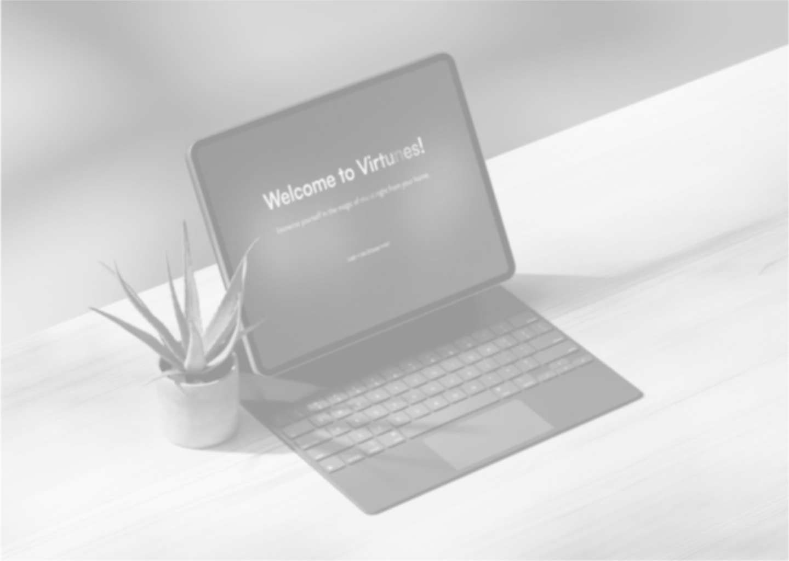

Virtunes
my most significant project to date is Virtunes, another school project with more creative freedom. we had the liberty to choose our target group, which allowed me to spread my wings. it was a challenging experience in collaboration as i faced some issues with my teammate, but i remained committed to making it work.
Virtunes was all about combining my love for music and design. it aimed to be a digital platform for virtual concerts, a concept close to my heart. though i couldn't fully realize it, i'm proud of what I achieved.

interested in the proces? take a look down here. a good point to make is that the website is not responsive, since I was short on time back then.